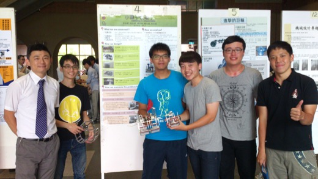

All Terrain Walking Transporter
說明：本專題擬設計一全域地形運輸器（All Terrain Transport），不但能克服凹凸地面，在草地及大小不等之石塊存在的平台，亦能平穩的達到運輸物品的功能。
規則：所設計之運輸器需能運輸一方行物體，運輸過程不得有外力協助，大小亦不得超過 長310mm 寬228mm 高103mm。運輸場地如下圖分成草地（60分），梯形障礙（70分），球池（80分），斜坡（90分），及細網區（100分），各區長800mm。
設計限制：
- 必須使用下列元件至少兩種:彈簧，（正，斜，傘）齒輪，螺絲（帽），軸承，齒條，凸輪，棘輪，皮帶，鏈條，卡榫，鉚釘；
- 五人一組，各組總成本不得大於新台幣5000元（含所有材料及耗材）
- 所有加工僅能使用機械工廠設備，除同組組員外，不得假手他人；
- 待運送之物品由助教放置於合理處，組員不得對所運送之物品做任何的改 變或包覆；
- 所運輸之物品必須依序過關，不得略過任何一區。
巴拿納號 - 楊宗霖、施榮華、郭俊豪、林宏翰、黃炳逢
（最佳海報獎、最佳分析獎）
翻滾吧 健欽 - 廖健欽、鄭中豪、楊武德、吳承穎、吳建霖
（最佳工藝獎）
無敵風火輪 - 曾昱泰、蔡中寧、李泗昕、黃建瑋、謝承原
（最佳創意獎）
RUSHER - 張澤紹、楊宜睿、陳士弘、莊智傑、施彥豪
小霖子快喵了 - 李冠霖、張辰瑋、鍾委倫、陳永健、林定遠

進擊的巨輪 - 張議文、馬顗安、王子驊、黃翊豪、彭立獻
上山下海號 - 蔡宛佑、張惟森、柯浩宇、盧長甡
進擊の巨人 - 立體機動裝置 - 黃昭凱、趙彥泓、高聿寬、吳昌穆、李承翰
Bubu Craft GoGo - 陳以哲、洪健智、朱育柱、吳培菘、江浩瑋
連滾帶爬 - 進擊的便宜貨 - 莊民頡、戴肇暘、陳揚霖、張庭瑞、翁筱修
小明60號 - 黃敬傑、周義閔、官大軒、董作群、林哲維
黑金剛 - 歐威廷、林鈺洋、葛紘穎、陳鈺峰、陳瑋志